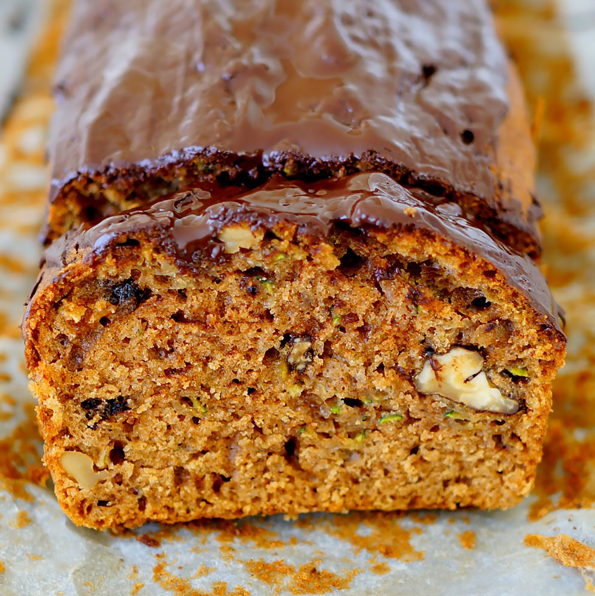

Mom's Zucchini Bread

Description
If your garden has blessed you with an abundance of everyone’s favorite
squash, then it’s time to get out the grater, fire up the oven and bake
some loaves with this moist, tender, spice-infused easy Zucchini Bread
recipe. We'll show you how to make homemade Zucchini Bread with a
quick-prep recipe and tips for easily swapping veggies or adding fruit for
a dash of sweetness. Master this recipe and you'll open the door to a
delicious season of homegrown goodness.
Ingredients
- 3 cups all-purpose flour
- 1 teaspoon salt
- 1 teaspoon baking soda
- 1 teaspoon baking powder
- 1 tablespoon ground cinnamon
- 3 eggs
- 1 cup vegetable oil
- 2 ¼ cups white sugars
- 3 teaspoons vanilla extract
- 2 cups grated zucchini
- 1 cup chopped walnuts
Steps
- Grease and flour two 8 x 4 inch pans. Preheat oven to 325 degrees F
(165 degrees C).
- Sift flour, salt, baking powder, soda, and cinnamon together in a bowl.
- Beat eggs, oil, vanilla, and sugar together in a large bowl. Add
sifted ingredients to the creamed mixture, and beat well. Stir in
zucchini and nuts until well combined. Pour batter into prepared pans.
- Bake for 40 to 60 minutes, or until tester inserted in the center
comes out clean. Cool in pan on rack for 20 minutes. Remove bread
from pan, and completely cool.
Back to main page